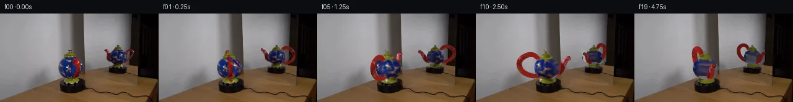

![首帧]()

Round 00
2026-11-05T13:14:03.430536+00:00像素候选变化代码 +316/−0inspection 更新
pixels b8fc9d5c8de33561 · code be1cf5a99b74bac3
查看本轮 generate.py 真实 diff
--- previous/generate.py
+++ current/generate.py
@@ -0,0 +1,316 @@
+"""PixelWorld: local numerical surface reconstruction and RGB texture projection."""
+from pathlib import Path
+import json, math
+import numpy as np
+from PIL import Image, ImageDraw
+from scipy.ndimage import map_coordinates, gaussian_filter, distance_transform_edt
+from scipy.interpolate import PchipInterpolator, CubicSpline
+import cv2
+import artifact_io
+
+ROOT = Path(__file__).resolve().parent
+TMP = ROOT / '.tmp'
+TMP.mkdir(exist_ok=True)
+SOURCE = np.array(Image.open(ROOT / 'first_frame.png').convert('RGB'))
+W, H, SS = 256, 144, 3
+
+# Coordinates: y vertical, z toward viewer after azimuth rotation.
+VIEWS = [dict(cx=116.0, cy=110.2, scale=19.6, elev=17., yaw=77., flip=1),
+ dict(cx=190.6, cy=85.9, scale=13.5, elev=12., yaw=145., flip=-1)]
+verts, norms, materials, triangles = [], [], [], []
+
+def surface(p, n, material, wrap_u=True):
+ start = len(verts)
+ nu, nv = p.shape[:2]
+ verts.extend(p.reshape(-1, 3)); norms.extend(n.reshape(-1, 3))
+ materials.extend([material]*(nu*nv))
+ for u in range(nu if wrap_u else nu-1):
+ un = (u+1)%nu
+ for v in range(nv-1):
+ a=start+u*nv+v; b=start+un*nv+v
+ triangles.extend([(a,b,a+1),(b,b+1,a+1)])
+
+def lathe(heights, radii, material, levels=64, sectors=144):
+ fun=PchipInterpolator(heights,radii)
+ ys=np.linspace(heights[0],heights[-1],levels)
+ rs=fun(ys); dr=fun.derivative()(ys)
+ a=np.linspace(0,2*np.pi,sectors,endpoint=False)
+ p=np.stack([np.cos(a)[:,None]*rs[None,:],np.broadcast_to(ys,(sectors,levels)),np.sin(a)[:,None]*rs[None,:]],axis=-1)
+ n=np.stack([np.broadcast_to(np.cos(a)[:,None],(sectors,levels)),np.broadcast_to(-dr,(sectors,levels)),np.broadcast_to(np.sin(a)[:,None],(sectors,levels))],axis=-1)
+ n/=np.linalg.norm(n,axis=-1,keepdims=True)
+ surface(p,n,material)
+
+# Rounded blue vessel, yellow pedestal and dome-shaped removable lid.
+lathe([.24,.32,.45,.65,.90,1.14,1.40,1.65,1.83,1.96,2.02],
+ [.39,.55,.73,.91,1.005,1.025,.98,.85,.65,.48,.44],0,76)
+lathe([-.035,.00,.08,.19,.26,.33], [.56,.63,.69,.69,.57,.40],1,22,112)
+lathe([2.015,2.045,2.08,2.13,2.20,2.28,2.34,2.37],
+ [.45,.52,.53,.49,.42,.31,.17,.07],1,36,112)
+lathe([2.35,2.40,2.45,2.53,2.57,2.60], [.07,.09,.135,.135,.10,.018],2,22,72)
+
+# Red handle: open loop attached to the body, almost end-on in the source.
+control=np.array([[.66,1.96],[1.08,2.36],[1.65,2.35],[2.19,1.98],[2.29,1.45],[2.00,.93],[1.34,.58],[.68,.53]])
+u=np.linspace(0,1,len(control)); uu=np.linspace(0,1,100)
+spline=CubicSpline(u,control,axis=0)
+xy=spline(uu); tangent=spline(uu,1); tangent/=np.linalg.norm(tangent,axis=-1,keepdims=True)
+tube_angle=np.linspace(0,2*np.pi,24,endpoint=False)
+rad=.165+.055*np.sin(np.pi*uu)**.5
+centers=np.c_[xy,np.zeros(len(xy))]
+normal=np.c_[-tangent[:,1],tangent[:,0],np.zeros(len(xy))]
+p=centers[:,None,:]+rad[:,None,None]*(normal[:,None,:]*np.cos(tube_angle)[None,:,None]+np.array([0,0,1])[None,None,:]*np.sin(tube_angle)[None,:,None])
+n=normal[:,None,:]*np.cos(tube_angle)[None,:,None]+np.array([0,0,1])[None,None,:]*np.sin(tube_angle)[None,:,None]
+surface(p.transpose(1,0,2),n.transpose(1,0,2),3)
+
+# Tapered rising spout, with a recessed mouth and a ceramic rim.
+control=np.array([[-.65,.72],[-1.04,.83],[-1.29,1.12],[-1.48,1.48],[-1.72,1.76],[-2.01,1.88]])
+spline=CubicSpline(np.linspace(0,1,len(control)),control,axis=0)
+uu=np.linspace(0,1,72); xy=spline(uu); tangent=spline(uu,1); tangent/=np.linalg.norm(tangent,axis=-1,keepdims=True)
+rad=.31-.145*uu+.016*np.exp(-((uu-.98)/.035)**2)
+centers=np.c_[xy,np.zeros(len(xy))]; normal=np.c_[-tangent[:,1],tangent[:,0],np.zeros(len(xy))]
+a=np.linspace(0,2*np.pi,32,endpoint=False)
+p=centers[:,None,:]+rad[:,None,None]*(normal[:,None,:]*np.cos(a)[None,:,None]+np.array([0,0,1])[None,None,:]*np.sin(a)[None,:,None])
+n=normal[:,None,:]*np.cos(a)[None,:,None]+np.array([0,0,1])[None,None,:]*np.sin(a)[None,:,None]
+surface(p.transpose(1,0,2),n.transpose(1,0,2),4)
+# Mouth interior: inner tube extends a short distance inside the tip.
+d=np.linspace(-.115,-.005,6); c=centers[-1]+d[:,None]*np.r_[tangent[-1],0][None,:]
+p=c[None,:,:]+(.117+.025*np.linspace(0,1,6))[None,:,None]*(normal[-1][None,None,:]*np.cos(a)[:,None,None]+np.array([0,0,1])[None,None,:]*np.sin(a)[:,None,None])
+n=np.broadcast_to(-np.r_[tangent[-1],0],p.shape)
+surface(p,n,5)
+
+VERT=np.asarray(verts,dtype=np.float32); NORM=np.asarray(norms,dtype=np.float32)
+MAT=np.asarray(materials,dtype=np.int32); TRI=np.asarray(triangles,dtype=np.int32)
+
+
+def projection(points,view,angle=0):
+ a=np.deg2rad(view['yaw']+angle); e=np.deg2rad(view['elev'])
+ x=points[:,0]*np.cos(a)-points[:,2]*np.sin(a)
+ z=points[:,0]*np.sin(a)+points[:,2]*np.cos(a)
… diff truncated; 229 more lines …